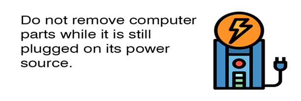
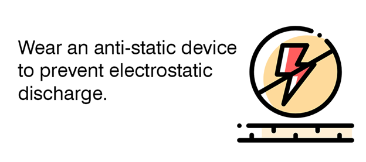
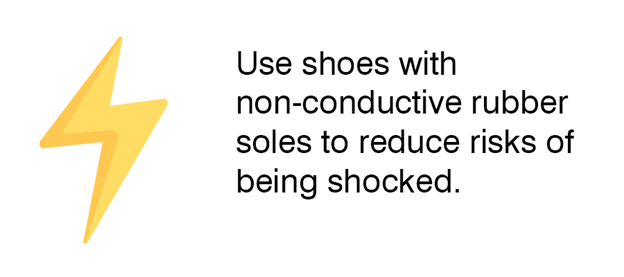
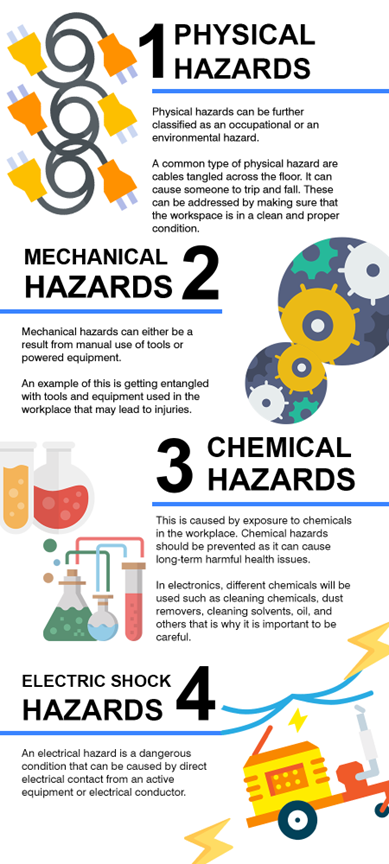
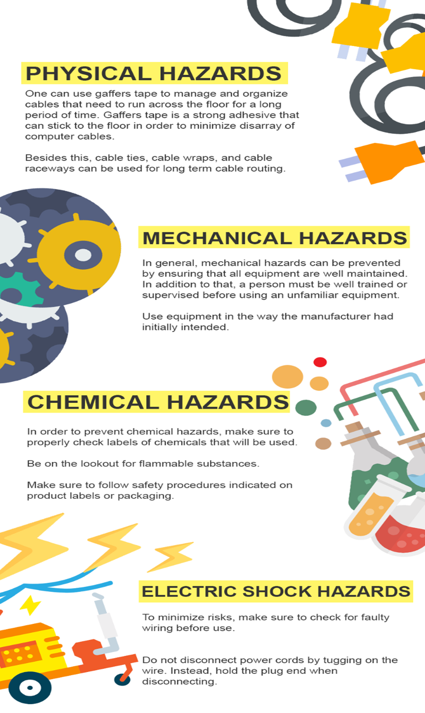

INTRODUCTION
Occupational Health and Safety or OHS is concerned with health, safety, and welfare issues in the workplace. Policies and procedures are important in discussing OHS because it aims to make the workplace safer and better for workers and stakeholders.
It is concerned with many factors such as removal of hazards and reducing accidents in the workplace.
As a future computer technician, it is your responsibility to know these standard protocols especially since you will be assembling and repairing expensive and sensitive equipment that need care and proper handling.
Occupational Health and Safety (OHS) is a set of policies and procedures that is followed in a workplace to prevent accidents, illnesses, and injuries.
It involves knowing the risks that can be encountered in a workplace and figuring out how it can be prevented.
Following OHS policies and procedures is important when dealing with electronics since it would protect not only the personnel dealing with the components, but also the unit itself.
Three steps may be done to facilitate OHS procedures in a CSS workspace:
- Hazard identification
- Risk assessment
- Risk control
In addition to that, here are some additional OHS Procedures that must be observed in computer servicing:



Hazards are anything that can hurt a person. Example of hazards that can be encountered when conducting computer systems servicing are:
- Tangled electrical cords
- Unsecured or unevenly stacked boxes.
- Noise
- Hazard identification involves observing the workplace’s surroundings to recognize potential risks.
What are common hazards that can be encountered in the electronic industry?

Once the hazard has been identified and its risks have been evaluated, it is time to address these issues:
Ask your supervisor for instruction and training before using or repairing an equipment.
Do not carry or move heavy objects by yourself.
